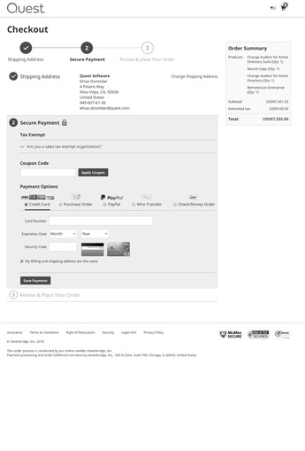
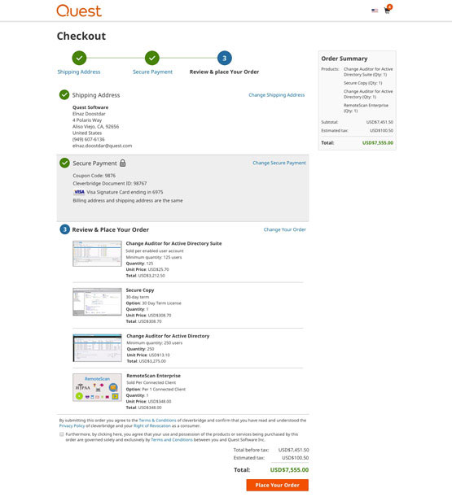

<div class="portfolio-modal modal fade" id="portfolioModal-3" tabindex="-1" role="dialog" aria-hidden="true">
  <div class="modal-content">
    <div class="close-modal white" data-dismiss="modal">
      <div class="lr">
        <div class="rl">
        </div>
      </div>
    </div>
    <div class="dark-bg">
      <div class="container">
        <div class="row">
          <div class="col-md-8 col-md-offset-2 text-center intro">
            <h2 class="text-white">Project Planner</h2>
            <h3 class="text-white">Enhancing the power of team collaboration</h3>
            <div class="project-details">
              <p class="mt-0 text-white">Sep 2017</p>
            </div>
          </div>
          <div class="col-xs-12">
            
          </div>
        </div>
      </div>
    </div>
    <div class="process-overview">
      <div class="container">
        <div class="row">
          <div class="col-md-8 col-md-offset-2 mt-90-sm-md-lg mt-40-xs">
            <h3>Overview</h3>
            <p>Quest e-commerce site is the selling point of 128 software products. It’s remained unchanged for a
              couple
              of years after Quest separation from Dell.</p>
            <p>I worked on redesigning and enhancing the experience of this platform with the focus of aligning the
              brand
              with the main marketing site and improving shopping experience to provide a pleasant purchase
              journey. </p>
          </div>
          <div class="col-md-8 col-md-offset-2 mt-90-sm-md-lg mt-40-xs">
            <h3>The Challenge</h3>
            <p>Customers want to have a clear understanding of the specifications and the different editions of the
              products they are buying. Fast checkout process along with access to available savings, will create
              a positive experience and therefore will increase repeat customer rate.
            </p>
            <p>Our high level goals were to:</p>
            <ul>
              <li>Organize content for deeper engagement</li>
              <li>Align branding to create a consistent experience</li>
              <li>Make the checkout easy and fast for everyone, on any device, anywhere</li>
            </ul>
          </div>
          <div class="col-md-8 col-md-offset-2 mt-90-sm-md-lg mt-40-xs">
            <h3>My Role</h3>
            <p>I was the main designer for this project however I worked alongside a business analyst, a project
              manager, a data scientist and also collaborated with a 3rd party vendor to hand off design
              requirements and test the outcome.</p>
          </div>
          <div class="col-md-8 col-md-offset-2 mt-90-sm-md-lg mt-40-xs">
            <h3>Scope & Constraints</h3>
            <p>The scope of this project would affect the following areas:</p>
            <ul>
              <li>Main product listing page</li>
              <li>Product individual pages</li>
              <li>Shopping cart</li>
              <li>Checkout</li>
            </ul>
            <p>We had a limited budget for this project so we had to eliminate redesigning some
              sections and avoid too much customization of existing modules.</p>
            <p>I had to work with a new team of developers which made communication challenging from time to
              time.</p>
            <p>
              Limited resources for testing and logging bugs was yet another issue because we didn’t have a
              shared environment with the vendor.
            </p>
          </div>
          <div class="col-md-8 col-md-offset-2 mt-90-sm-md-lg mt-40-xs">
            <h3>The Process</h3>
            <h5>Initial Exploration</h5>
            <p>I started my journey by using the platform with fresh eyes to have a deeper understanding of the
              current flow and potential areas of improvement. Following are some of my initial
              findings:</p>
            <ol>
              <li>The listing page had an overwhelming amount of information for each product.</li>
              <li>Quantity of the products could only be adjusted at the cart level and not the product level which is
                not
                standard in other e-commerce sites.
              </li>
              <li>Cart and checkout were both on a single page which made the purchase process seem unnecessarily
                long.
              </li>
              <li>Unless I open different editions of a specific product in a new tab, I didn’t have a way to easily
                compare them both side by side. It required a high cognitive load to focus and identify the
                differences.
              </li>
              <li>In the future, it would be nice to have a single sign-in for both marketing and e-commerce
                domains. A dashboard can create a more personalized experience for our customers.
              </li>
            </ol>

          </div>
          <div class="col-md-8 col-md-offset-2 mt-40">
            <h5>Early Insights from Data</h5>
            <p>I worked with a data scientist and a BA to understand the current workflow deeper and spot key areas
              for
              improvements based on our existing data. </p>
            <p>Based on an intercept survey conducted on the site, <span class="data">47%</span> of customers claimed
              that it is hard to compare
              and understand the different features came with different editions of certain products.</p>
          </div>
          <div class="col-xs-12 mt-40 mb-40">
            <blockquote>I couldn’t tell the difference between RemoteScan enterprise and RemoteScan enterprise user
              edition, I had to call sales to get a better understanding of the features to make a decision.
            </blockquote>
          </div>
          <div class="clearfix"></div>
          <div class="col-md-8 col-md-offset-2">
            <p class="mt-0">Considering that RemoteScan is the second most popular product of Quest and bringing in a
              high revenue to
              the company, the priority to improve this situation became critical right away.</p>
            <p>Plus, the flow in Google Analytics showed that <span class="data">22%</span> of customers abandoned
              shopping cart just to review or
              modify the support plan they chose in the previous step of the checkout. </p>
          </div>
          <div class="col-md-8 col-md-offset-2 mt-40">
            <h5>Interviews</h5>
            <p>I also interviewed some of our sales folks to collect direct input from our customers. My main goal was
              to capture some qualitative data to back up our existing quantitative data. Here are a few high-level
              insights I captured from our customers: </p>
            <ol>
              <li>Purchase conditions are buried in the product detail section with other information</li>
              <li>Existing customers may benefit from additional savings but wouldn't know that unless they call sales
              </li>
              <li>Different saving options are obscure while choosing a support plan for certain products</li>
              <li>The checkout process is long and requires too much back and forth</li>
              <li>It is hard to compare product features</li>
            </ol>
            <p>I had a few interview sessions with different business unit stakeholders. My primary goal was to
              understand the business needs and how I could leverage them with our customer needs and kill two birds
              with
              one stone. Here are some of the concerns and needs I identified talking to 3 stakeholders:</p>
            <ul>
              <li>The high volume of support calls due to lack of properly formatted information on the site which was
                quite costly
              </li>
              <li>There is a need for a space to promote featured products & new releases</li>
              <li>Lack of context for the customers visiting from external sources</li>
            </ul>
          </div>
          <div class="col-xs-12 mt-40">
            <blockquote>
              Metrics show over <strong><i>50%</i></strong> of customers purchasing RemoteScan on shop enter from a
              generic RemoteScan buy page
              that does not provide any product content or comparison. We need a solution for this within the shop to
              ensure a clean and informative customer journey to purchase.
            </blockquote>
          </div>
          <div class="clearfix"></div>
          <div class="col-md-8 col-md-offset-2 mt-40">
            <p class="mt-10">What if we create a hybrid product page that creates better context for the customers
              coming to
              the site from external sources? A clean comparison matrix table explaining different specs of editions
              could
              clarify ambiguous information about certain products. </p>
          </div>
          <div class="col-md-8 col-md-offset-2 mt-40">
            <h5>Further Research</h5>
            <p>At this point, I had enough to start working on the project but what I also wanted to know was to
              look at some broader research sources to understand the best practices of creating a smooth online
              shopping experience.</p>
            <p>I started to read several research articles from the <a href="https://baymard.com/about"
                                                                       target="_blank">Baymard
              Institute</a> about the following topics:</p>
            <ul>
              <li><a href="https://baymard.com/blog/auto-update-users-quantity-changes" target="_blank">Quantity
                dropdown functionality</a></li>
              <li><a href="https://baymard.com/blog/checkout-flow-average-form-fields" target="_blank">Optimize the
                number of form fields</a></li>
              <li><a href="https://baymard.com/blog/zip-code-auto-detection" target="_blank">Autofill form fields</a>
              </li>
              <li><a href="https://baymard.com/blog/accordion-checkout-usability" target="_blank">Accordion vs step by
                step checkout flow</a></li>
              <li><a href="https://baymard.com/blog/perceived-security-of-payment-form" target="_blank">Perception of
                security during payment </a></li>
            </ul>
            <p>Based on my learning, I tried to apply the same standard rules while designing the user
              interface. </p>
          </div>
          <div class="col-md-8 col-md-offset-2 mt-90-sm-md-lg mt-40-xs">
            <h5>User Flow</h5>
            <p>
              Before I could jump into designing, it was important to confirm my assumptions and define the happy path
              in the process workflow.</p>
            <p>
              I created a new user flow based on my findings so that I could find any steps missed or have issues
              sooner than later. That way I could save time during design by making sure my solution would target
              solving the right problem.</p>
            <p>I went over the flow with the team multiple times. Following is the flow we all agreed to be ideal for
              our customers. </p>
          </div>
          <div class="col-sm-12 mt-40">
            <div>
              
            </div>
          </div>
          <div class="col-md-8 col-md-offset-2 mt-90-sm-md-lg mt-40-xs mb-40">
            <h5>Wireframes & Style Guide</h5>
            <p>I created hybrid mockups using sketch, mainly because I had all the necessary components in our design
              library so I could quickly stitch them together.</p>
            <p>I intended to create a click-based prototype in Frontify and test with at least 3-5 users. I will
              explain the details of my finding after user testing in the mockups section.</p>
            <p>I created a mini style guide from<a
                    href="http://brand.quest.com/d/lDQ4Gdbuz18B/web" target="_blank"> Quest design library</a> in
              Sketch
              so that I can quickly drop elements into my mocks.</p>
          </div>
          <div class="col-xs-12">
            
          </div>
          <div class="col-sm-6 col-md-3 col-xs-12 pb-20">
            <p class="black-title"><strong>1. </strong>Catalog listing page</p>
            
          </div>
          <div class="col-sm-6 col-md-3 col-xs-12 pb-20">
            <p class="black-title"><strong>2-1. </strong>Product detail</p>
            
          </div>
          <div class="clearfix visible-sm"></div>
          <div class="col-sm-6 col-md-3 col-xs-12 pb-20">
            <p class="black-title"><strong>2-2. </strong>Licensing options</p>
            
          </div>
          <div class="col-sm-6 col-md-3 col-xs-12 pb-20">
            <p class="black-title"><strong>2-3. </strong>Versions</p>
            
          </div>
          <div class="clearfix visible-sm"></div>
          <div class="clearfix visible-md visible-lg"></div>
          <div class="col-sm-6 col-md-3 col-xs-12 mb-20">
            <p class="black-title"><strong>3. </strong>Shopping cart</p>
            
          </div>
          <div class="col-sm-6 col-md-3 col-xs-12 mb-20">
            <p class="black-title"><strong>4. </strong>Checkout step 1</p>
            
          </div>
          <div class="clearfix visible-sm"></div>
          <div class="col-sm-6 col-md-3 col-xs-12  mb-20-xs">
            <p class="black-title"><strong>5. </strong>Checkout step 2</p>
            
          </div>
          <div class="col-sm-6 col-md-3 col-xs-12  mb-20-xs">
            <p class="black-title"><strong>6. </strong>Checkout step 3</p>
            
          </div>
          <div class="clearfix visible-sm"></div>
          <div class="clearfix visible-md visible-lg visible-xs"></div>
          <div class="col-md-8 col-md-offset-2 mt-90-sm-md-lg mt-40-xs mb-40">
            <h5>Mockups</h5>
            <p>After several iterations and user testing we came up with the following solution to address the goals
              we
              defined initially for this project. We mainly based our judgments on the UX metrics we collected
              using <a
                      href="https://www.interaction-design.org/literature/article/google-s-heart-framework-for-measuring-ux"
                      target="_blank"> The Heart Framework</a> from Google.</p>
          </div>
          <div class="col-xs-12 col-sm-6 mb-20-xs" data-mh="my-group">
            
          </div>
          <div class="col-xs-12 col-sm-6">
            <div data-mh="my-group">
              <div class="auto-box-middle">
                <div>
                  <p class="black-title"><strong>1. </strong>Catalog listing page</p>
                  <p>I used the same hero banner concept we have on Quest marketing site to dedicate a
                    space for promoting new releases and featured products to meet one of the asks from the business
                    during
                    our <em>interview</em> sessions.</p>
                  <p>Based on our <em>card sorting</em> session with stakeholders, We created categories to filter
                    products on
                    this page to make finding a product quicker.</p>
                  <p>The card view concept for each product helped to avoid displaying an overwhelming amount of
                    information to customers and decreased the cognitive load.</p>
                  <p>Prefixing the prices with the currency type abbreviation was another aspect that made pricing
                    clear
                    for other countries.</p>
                </div>
              </div>
            </div>
          </div>
          <div class="col-xs-12 mt-90-sm-md-lg mt-40-xs">
            <div class="row">
              <div class="col-xs-12 col-sm-6 mb-20-xs pull-right" data-mh="my-group">
                
              </div>
              <div class="col-xs-12 col-sm-6">
                <div data-mh="my-group">
                  <div class="auto-box-middle">
                    <div>
                      <p class="black-title"><strong>2-1. </strong>Product detail</p>
                      <p>To create some context for customers visiting from external sources, I used a
                        video outlining the main features and benefits of the product. Besides, I included a link back
                        to
                        the product page on the marketing site for accessing further in-depth information.</p>
                      <p>Adding dynamic labels for elements that tied to a certain condition increased clarification
                        and
                        decreased sales calls by <span class="data">20%</span>.</p>
                      <p>I also worked with developers to create instant field validation for quantity dropdown and
                        some
                        minor UX enhancements to the element functionality.</p>
                    </div>
                  </div>
                </div>
              </div>
            </div>
          </div>
          <div class="clearfix"></div>
          <div class="col-xs-12 mt-90-sm-md-lg mt-40-xs">
            <div class="row">
              <div class="col-xs-12 col-sm-6 mb-20-xs" data-mh="my-group">
                
              </div>
              <div class="col-xs-12 col-sm-6">
                <div data-mh="my-group">
                  <div class="auto-box-middle">
                    <div>
                      <p class="black-title"><strong>2-2. </strong>Licensing options</p>
                      <p>Talking to stakeholders and sales revealed a need for specifying different saving options.
                        I gathered the information from our BA and displayed in a tile view, highlighting the
                        recommended
                        option to make the decision making process a tad easier.</p>
                      <p>I also tried to call out other conditions for the product to reduce sales contact.</p>
                      <p>Although these changes reduced sales contact rate for this topic by <span
                              class="data">5%</span>,
                        I believe this
                        to be a behavior change that will show over time. </p>
                    </div>
                  </div>
                </div>
              </div>
            </div>
          </div>
          <div class="col-xs-12 mt-90-sm-md-lg mt-40-xs">
            <div class="row">
              <div class="col-xs-12 col-sm-6 mb-20-xs pull-right" data-mh="my-group">
                
              </div>
              <div class="col-xs-12 col-sm-6">
                <div data-mh="my-group">
                  <div class="auto-box-middle">
                    <div>
                      <p class="black-title"><strong>2-3. </strong>Versions</p>
                      <p>Creating a new page to outline all the different editions of the product eliminated the
                        confusion
                        to certain extent.</p>
                      <p>We split tested a comparison matrix on the marketing site and achieved <span
                              class="data">6.05%</span> uplift in conversion rate.</p>
                    </div>
                  </div>
                </div>
              </div>
            </div>
          </div>
          <div class="clearfix"></div>
          <div class="col-xs-12 mt-90-sm-md-lg mt-40-xs">
            <div class="row">
              <div class="col-xs-12 col-sm-6 mb-20-xs" data-mh="my-group">
                
              </div>
              <div class="col-xs-12 col-sm-6">
                <div data-mh="my-group">
                  <div class="auto-box-middle">
                    <div>
                      <p class="black-title"><strong>3. </strong>Shopping cart</p>
                      <p>I divided the cart and checkout into two separate pages, to keep customers stay focused on
                        accomplishing one task at a time.</p>
                      <p>When testing the prototype with candidates, I noticed that some of them missed the promotions
                        presented on product detail pages. I included the savings based on the items they had in
                        the cart on this page as well.</p>
                      <p>Data revealed that going back and forth to update certain items in the cart caused the cart
                        abandonment. We included a link with a pop-up that would let customers change licensing
                        without
                        leaving the cart. This update reduced the cart abandonment rate by <span
                                class="data">17%</span>.
                      </p>
                    </div>
                  </div>
                </div>
              </div>
            </div>
          </div>
          <div class="col-xs-12 mt-90-sm-md-lg mt-40-xs">
            <div class="row">
              <div class="col-xs-12 col-sm-6 mb-20-xs pull-right" data-mh="my-group">
                
              </div>
              <div class="col-xs-12 col-sm-6">
                <div data-mh="my-group">
                  <div class="auto-box-middle">
                    <div>
                      <p class="black-title"><strong>4. </strong>Checkout step 1</p>
                      <p>A linear design approach helped stay focused on one task at a time.</p>
                      <p>Adding an interactive step navigation bar at the top not only provided constant feedback
                        about
                        where
                        customers are in the process, but also helped them to navigate back if needed.</p>
                      <p>By looking at order summary box, customers had better visibility of the products they were
                        purchasing. </p>
                    </div>
                  </div>
                </div>
              </div>
            </div>
          </div>
          <div class="clearfix"></div>
          <div class="col-xs-12 mt-90-sm-md-lg mt-40-xs">
            <div class="row">
              <div class="col-xs-12 col-sm-6 mb-20-xs" data-mh="my-group">
                
              </div>
              <div class="col-xs-12 col-sm-6">
                <div data-mh="my-group">
                  <div class="auto-box-middle">
                    <div>
                      <p class="black-title"><strong>5. </strong>Checkout step 2</p>
                      <p>Displaying the summary of the completed step made it easy to have a quick glimpse of
                        the information on the previous step without leaving the checkout.</p>
                      <p>Initially, I proposed an <a href="https://jessepollak.github.io/card/" target="_blank">interactive
                        plugin</a> that could possibly reduce error rate while providing the card information.
                        Interestingly, some of the users thought we are going to steal their card info and print out
                        the
                        card displayed in the plugin.</p>
                    </div>
                  </div>
                </div>
              </div>
            </div>
          </div>
          <div class="col-xs-12 mt-90-sm-md-lg mt-40-xs">
            <div class="row">
              <div class="col-xs-12 col-sm-6 mb-20-xs pull-right" data-mh="my-group">
                
              </div>
              <div class="col-xs-12 col-sm-6">
                <div data-mh="my-group">
                  <div class="auto-box-middle">
                    <div>
                      <p class="black-title"><strong>6. </strong>Checkout step 3</p>
                      <p>At this point customers reached to the final step of their purchase journey and can skim
                        through
                        the information they provided one last time.</p>
                    </div>
                  </div>
                </div>
              </div>
            </div>
          </div>
          <div class="clearfix"></div>
          <div class="row">
            <div class="col-xs-12 mt-90-sm-md-lg mt-40-xs">
              <div class="col-md-8 col-md-offset-2 mt-40">
                <h3>Impact & Improvements </h3>
                <p>The redesign of Quest e-commerce website had a positive impact on the checkout experience and
                  content
                  organization in general.</p>
                <p>However the conversion rate has not been significantly increased which means we have more things to
                  do.</p>
                <p>Some of the highlights are:</p>
                <ul>
                  <li>Contact sales rate decreased by <em>10%</em></li>
                  <li>Cart abandonment rate decreased by
                    <em>17%</em>
                  </li>
                  <li>Checkout completion task time improved by <em>40 seconds</em></li>
                </ul>
              </div>
            </div>
          </div>
        </div>
        <div class="clearfix"></div>
        <div class="col-md-8 col-md-offset-2">
          <p class="text-info">For confidentiality reasons I have omitted the actual values for the metrics on this
            project.</p>
        </div>
        <div class="col-xs-12 text-center mb-40 mt-40">
          <a class="btn btn-primary btn-block-xs mb-20-xs" href="https://shop.quest.com/682/purl-catredir"
             target="_blank">
            View in Action
          </a>
          <a class="btn btn-default btn-block-xs ml-20 ml-0-xs" data-dismiss="modal" href="#">
            Close Project</a>
        </div>
      </div>
    </div>
  </div>
</div>


